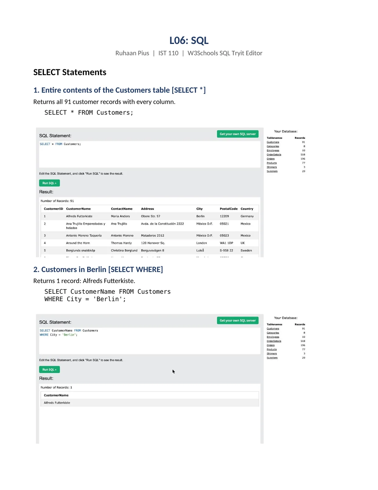

L07 SQL basics
The task
Write and run SQL statements in the W3Schools editor to select, filter, sort, de-duplicate, insert and delete records, with a screenshot of each result.
What I made
Each statement, with what it returned:
SELECT * FROM Customers; -- 91 records
SELECT CustomerName FROM Customers
WHERE City = 'Berlin'; -- 1 record
SELECT CustomerName FROM Customers
WHERE Country = 'USA'
ORDER BY CustomerName; -- 13 records, A to Z
SELECT City FROM Customers; -- 91 records
SELECT DISTINCT City FROM Customers; -- 69 unique cities
INSERT INTO Categories (CategoryName, Description)
VALUES ('Frozen Foods', 'French Fries, TV Dinners, Eggos');
DELETE FROM Categories
WHERE CategoryName = 'Frozen Foods';The INSERT and DELETE statements came back with a permission error. The W3Schools editor now runs on a shared database that visitors can only read, because Chrome removed the in-browser database it used to rely on. The syntax of both statements is correct, and I explained the error in a comment on my submission.

See the other 4 pages


Download the original (PDF, 5 pages, 478 KB)
Feedback
Noted
My instructor, in reply to my comment about the read-only editor
Reflection
At first I thought I'd made a mistake when INSERT and DELETE failed. Then I found out the W3Schools editor is now read-only, so those statements can't work there, and I explained that in a comment on my submission.
The SELECT side felt familiar. It's the same filtering and sorting I do in Excel for finance, just on much bigger tables, and it ties straight into the MySQL work I'm doing in IST 210 this semester.